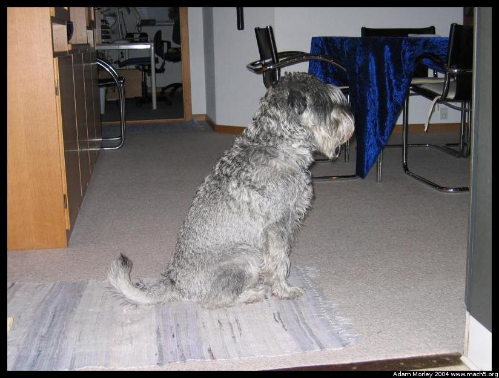

I am currently spending a semester abroad in Denmark studying the European Union and other related topics like cafes.
I arrived in Denmark via Scandinavian Airlines on a direct flight from Seattle to Copenhagen. I found the food to be of significantly higher quality than other airlines I had traveled on. After all, I received not only a hot dinner of some form of salmon over noodles with oodles of black pepper, but a snack before we touched down. I never found the nifty bag with toothbrush and toothpaste, but I always have my own on plane rides so it didn't matter. The sinks were not uniquely scandinavian, but rather much like other airplane sinks (I read somewhere the bathrooms were "scandinavian"). The airplane was the usual A340 type --- it shook like it was going to fall apart on both takeoff and landing, even though it was new. Typical French design? I found the seats on SAS to be somewhat uncomfortable when not reclined, but they were designed by a world-renowed designer, so that should count for something. I sat next to a wonderful Danish women who told me tidbits about Denmark, in addition to who the large group of similarly dressed rather sharp looking chaps were. They just so happend to be the Danish National Football Team, who had been playing in Seattle.
First, some background. I'm participating in the program run by DIS. They have existed effectively forever as far as study abroad is concerned, around fifty years. They run programs for humanities, social sciences, medicine, etc. in cooperation with the University of Copenhagen. The courses are, thankfully, conducted in English. Most Danes speak English, though my Danish is now good enough to order pastries in Danish, even if they do look at me a little funny sometimes. Its difficult to find someone who can't speak English (in addition to three other languages!) in Denmark. I have opted to live with a Danish host family to, I hope, increase my exposure to how the Danes live, work and play.
Many of you may know I am a physics major, so the lack of physics programs may surprise you. I have, however, finished my phyiscs degree and decided to do something significantly different from what I normally do. It has indeed been very different. I've found the people in my study abroad program to be friendly and outgoing, even if somewhat cliquish at times (many come in pre-existing groups from the same school). I do find it hard to meet these new people for some reason which I have yet to nail down.
After arrival in Copenhagen (CPH), I picked up my luggage and met the DIS person in baggage claim. The terminal is made of large amounts of glass and there was effectively no screening of what I brought into the country. Before arrival in baggage claim, my carry-on bag was x-rayed, and my passport was stamped, but that seemed like all there was. I've realized after a week that I don't take enough pictures, hopefully I will change that soon given that my camera can hold 240 at a time!
I exited terminal 3, and the revolving door had an odd centerpiece that seemed rather American (notice the Michelin Man).
The terminal looked something like this. The folks in the front are some other DIS students. The one in the red is Andy, I think. The first day was somewhat of a blur. No jet lag, I have some woo-woo and pills to thank for that.
After arrival, I went to the new campus of the University of Copenhagen to meet my host family. Turns out there were a few lectures on what to expect, and what not to do from the DIS staff. After work, the host families came to pick us up, and I met Ole and Britta for the first time. They seemed friendly and the meeting was *way* less awkward than I expected. I later found out I was their third foreign student, so they sort of knew how this worked from experience, which might account for the smoothness of the meeting.
Add pics of Ole and Britta here
I rode to my new home with Ole in his bus -- he drives a bus to transport handicap people. The ride was short, probably only fifteen minutes. My new home is in Dragor (except the o has a / through it), just past the airport. The road actually goes under the runway during one point. Ole and I spoke about Denmark, what he did, what Britta did, etc. on the way home.
Add pics of Ole's bus here
My new home for a while
Different lightswitches. Notice the handy outlet at hand level, switched even! Also note that the switches operate in the opposite direction of toggles in the USA.
We have magnetic soap. So nice, the bar can always drain and the nasty bottom goober on soap doesn't happen.
I always like to photograph toliets. Notice the two postition flush switch. One for #1, another for #2. Saves water.
The primary living room (the house is remodeled, so there is an extended edition living room). Our house is heated by a woodburning stove, which is quite warm in the evening post dinner (and post wine). It does, however, prevent me from studying because I get all warm and fuzzy inside and then go to bed. The danes call it "hygge" --- no direct English translation, but suffice it to say its the feeling of friendly people around a wood burning stove after a good (large) meal with copious amounts of wine.
More of the living room. The Danes like to make their homes cozy and inviting. This one is quite cozy.
My room, or rather my bed. Down comforter, down pillow. Too bad my classes require getting up at 6:00 each morning!
More of my room. I have a TV for some reason, though I don't really watch TV. It is nice for viewing the pictures on my digital camera. The Swedish program is on in the other room when I wash clothes.
I took some images with "Stitch assist" but have yet to find a Linux program to stitch things back together (I must admit, I haven't looked. If you've see one, let me know). Hopefully I'll find one so this doesn't look so. . .poor quality. Notice the SUV (technically, even though it only has two seats).
I like my house, I like my host family, I like my host pets. Oh yes! Pets!

The dog. She likes to run around in circles at the slightest provocation.The cat. She is not as sinister as she looks --- this was operator error.
That's all for the house, pets and host parents. My host parents are good people who have been most helpful in adjusting to life in Denmark. They are knowledgable about the country and its policies (both foreign and domestic) in addition to the oddities of life here. They are also willing to explain the simple things, like how to use a washing machine when its all in Danish. (Klarvask -- Clearwash or something like that) And other things of that nature.
Adam can be reached at adam dot morley at gmail dot com